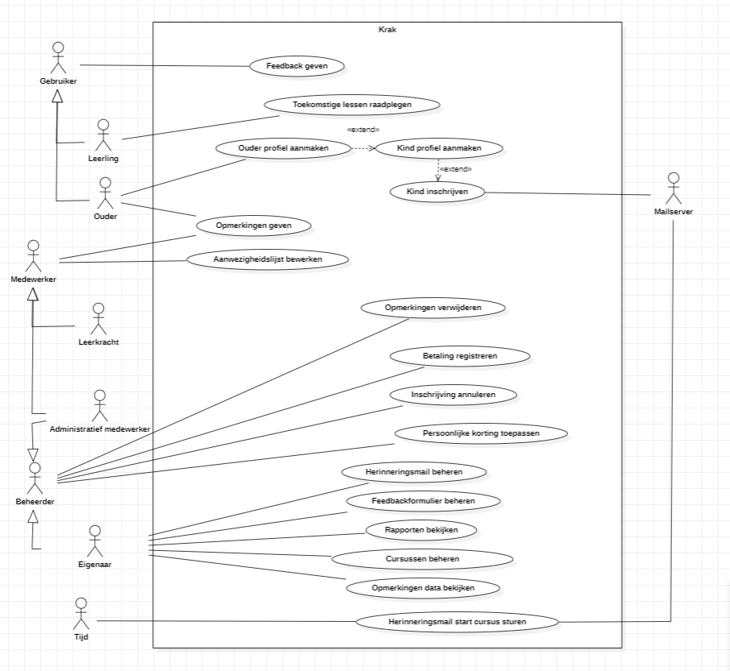

Welcome to my portfolio! Добро пожаловать в моё портфолио! Welkom op mijn portfolio!
Hello, my name is Asan Yousoupov. I live in Belgium and am pursuing my studies in Computer Science at Thomas More in Geel.
About Me
My name is Asan Yousoupov and I reside in Antwerp, Belgium. I am deeply passionate about working with computers, which led me to pursue a degree in Computer Science. I chose application development as my specialization because of my love for programming. I see programming not only as a skill but also as a series of exciting challenges, and I never back down from a challenge.
Outside of my academic pursuits, I enjoy exploring the worlds of cryptocurrency and chess. These hobbies not only provide me with leisure but also stimulate my analytical and strategic thinking skills.
Additionally, if I continue to pursue a career in Computer Science, I envision myself specializing in website development. Creating engaging and functional websites appeals to my creative side.
Furthermore, beyond my tech passion, I'm keen on investing. I love the dynamic finance world and aim to use my analytical skills for smart decisions. Whether in stocks, crypto, or other assets, I'm excited about this journey to financial growth.
Projects
Project Requirements Analysis
Description
I worked on a project for requirements analysis, with the aim of preparing everything before the website development phase. Requirements analysis involved tasks such as creating the use case diagram. I collaborated with other team members on this project and gained valuable soft skills. It taught me the importance of staying engaged and keeping up with the team, as falling behind is something to avoid at all costs.
Description
Previous year I completed a project for Web Design Essentials, where I was tasked with creating a portfolio website. This project required us to apply everything we had learned throughout the course. I thoroughly enjoyed working on this project because it allowed me to unleash my creativity. It also taught me valuable lessons about the time and effort required in website development. I realized that starting early and working consistently, even if it's just a little bit each day, is crucial. This approach not only ensures that the project gets completed on time but also prevents boredom from setting in, making the process more enjoyable and rewarding.